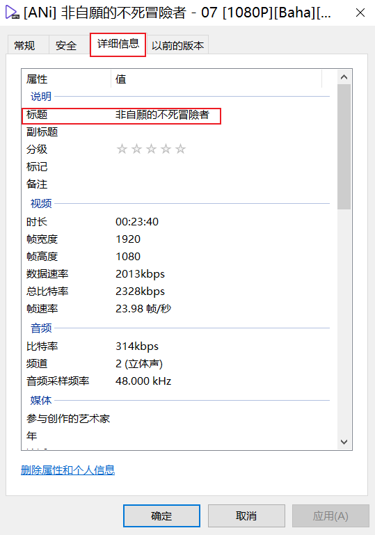

序言
Jellyfin 的设计理念是用户按照其媒体规则，创建对应层级的文件夹，放入媒体文件，再根据网络刮削器得到的元数据修改文件标题。但是这种规则过分强制了，以至于使用原始文件名作为标题 的功能都没有。我们当然可以手动修改媒体标题，但这样太麻烦了。
基于这种需求，我使用 jellyfin-apiclient-python 写了一个脚本，来批量重命名某个媒体库下的所有媒体。同时，本文也列举了以往的一些方案。在我看来，以前的方案都不尽人意。
已有方案 1
创建媒体库时选择『音乐视频』，同时选择『优先使用内置的标题而不是文件名』。
这个“内置标题”是什么？—— 打开一个视频的『属性』，进入『详细信息』。

在『标题』一栏填写的任何内容，都会如实地作为媒体标题显示在 Jellyfin 客户端上，不会有任何修改。
这种做法有两个问题：
1️⃣几乎所有的动漫搬运组在发布时，都会填入『标题』属性。如上图，『标题』里只有番名，没有剧集号。
这个问题其实很好解决，我们可以把文件名复制到『标题』中，也可以把『标题』清空。无论哪种方法，最终都会显示原始文件名。Python 的话可以使用 mutagen 模块自动化处理。
2️⃣『音乐视频』这种类型的媒体库无法显示文件夹结构。事实上，只有『混合电影和电视剧』才会以纯文件夹的形式展示。这一点我无法接受。
已有方案 2
直接修改数据库，参考『jellyfin手动修正标题为文件（夹）名』 。
绕过 Service 层直接操作数据库，太危险了，完全不考虑这种方案。
我的方案
既然方案 2 直接操作数据库不好，我们为何不使用 Jellyfin API？
首先要确定哪个功能用哪个 API。不要先看官网的文档，而是直接浏览器 F12 抓包，然后再回查文档。不过大部分情况下文档依旧没用，因为基本没有描述。此时我们基本只能靠猜测和实验了。
万幸，jellyfin-apiclient-python 提供了现成的 API，不需要从 requests 开始写。我很快写好了脚本：
1 2 3 4 5 6 7 8 9 10 11 12 13 14 15 16 17 18 19 20 21 22 23 24 25 26 27 28 29 30 31 32 33 34 35 36 37 38 39 40 41 42 43 44 45 46 47 from jellyfin_apiclient_python import JellyfinClientfrom jellyfin_apiclient_python.api import APIdef rename_to_filename (jellyfin: API, item_id: str ): metadata: dict = jellyfin.get_item(item_id) assert metadata['Id' ] == item_id assert len (metadata['MediaSources' ]) == 1 path: str = metadata['MediaSources' ][0 ]['Path' ] filename = path.split('/' )[-1 ] metadata.update({'Name' : filename}) return jellyfin.items('/' + item_id, action='POST' , params=None , json=metadata) def rename_items_in_library (jellyfin: API, library_id: str ): res = jellyfin.get_items_by_letter(parent_id=library_id) res = res['Items' ] item_count = 0 for r in res: if r['Type' ] == 'Folder' : continue rename_to_filename(jellyfin, r['Id' ]) item_count += 1 print (f'total renamed item count: {item_count} ' ) client = JellyfinClient() client.config.app('pycharm' , '0.0.1' , 'pycharm' , 'kufhskdf' ) client.config.data["auth.ssl" ] = True client.authenticate({"Servers" : [ { "AccessToken" : "xxx" , "address" : "zzz" , "DateLastAccessed" : 0 , "UserId" : "yyy" } ]}, discover=False ) print (client.logged_in)rename_items_in_library(client.jellyfin, 'uuu' )
话说回来，这个模块的文档写得也不咋地，我从 Issues 中才知道怎么连接服务器。
我的 Jellyfin 服务器的证书是自己搞的，Python 的 SSL 好像没办法使用操作系统安装的证书。可以设置环境变量 REQUESTS_CA_BUNDLE=证书地址 来解决。
使用我的方案，就完美地解决了上述两种方案的缺点。
参考